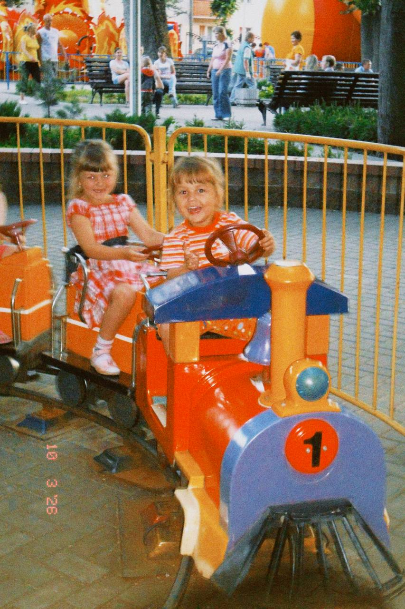

Таблица характеристик
| Характеристика | Lamborghini | Voyah | Jaguar |
|---|---|---|---|
| 1.Самая дорогая модель | Lamborghini Revuelto SV | Voyah Dream 9 | Jaguar F-Type |
| 2.Самая дешёвая модель | Huracán EVO | Voyah Courage | Jaguar XE |
| 3.Двигатель | V12 / V8 Twin-Turbo (гибрид) | Электро / 1.5T PHEV | 2.0T / 3.0T (бензин, дизель, MHEV) |
| 4.Расход топливa | 10.3–11.2 л/100км (при заряженной батарее); 14–17.9 л/100км (при разряженной) | Гибрид (низкий расход в смешанном цикле; в городе может ездить только на электро) | 12.0 л/100км |
| 5.Скорость(0-100) | 2.4 секунды | 5.9 секунды | 3.8–4.0 секунды |
| 6.Наличие экологических сертификатов | Euro 6 / Plug-in Hybrid (низкий CO2 в городе) | China 6 | Euro 6e |
| 7.Гарантийный срок | 3 года | 5 лет | 3 года |
| 8.Максимальная скорость | 345 км/ч | 200 км/ч (ограничена электроникой) | 286 км/ч |
| 9.Тип КПП | Автоматическая | Автоматическая | Автоматическая |
| 10.Количество передач | 8 | 1(фиксированная) | 8 | Вывод: Lamborghini — самая быстрая и мощная, но и самая дорогая. Voyah — самый экономичный и доступный, ориентирован на комфорт. Jaguar — золотая середина: спортивный характер при умеренной цене. |
Дополнительная информация о производителяхLamborghini — итальянский производитель суперкаров, основан в 1963 г. Voyah — китайский премиум-бренд Dongfeng, специализация — электромобили. Jaguar — британская марка, основана в 1922 г., входит в Tata Motors. |
|||
Фотографии
